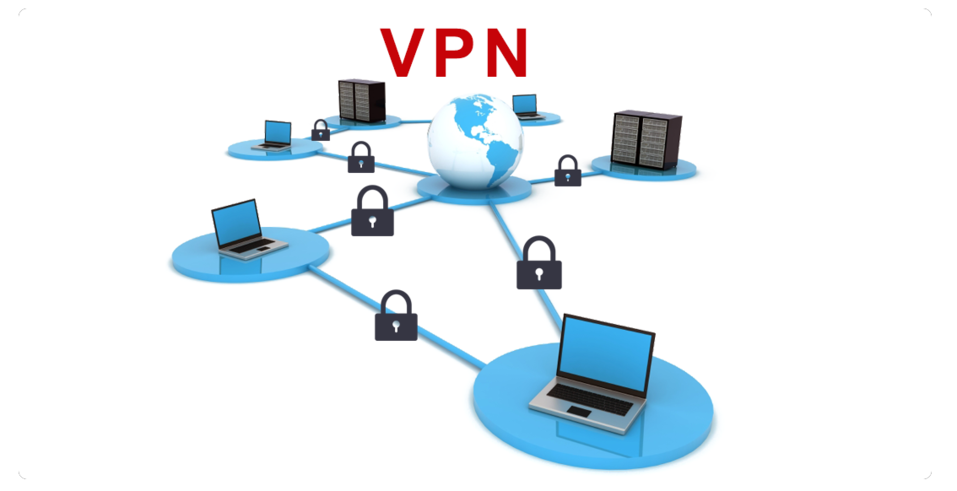

VPN(Virtual Private Network) — виртуальная частная сеть. В настоящее время VPN это главный инструмент для защиты данных и сохранения анонимности в интернете. Технология соединяет клиента и сервер, используя промежуточный серверный узел. Работа VPN строится на базе любой из физических компьютерных сетей, описания которых были приведены выше. Подключение через VPN позволит скрыть IP адрес пользователя и зашифровать соединение.
